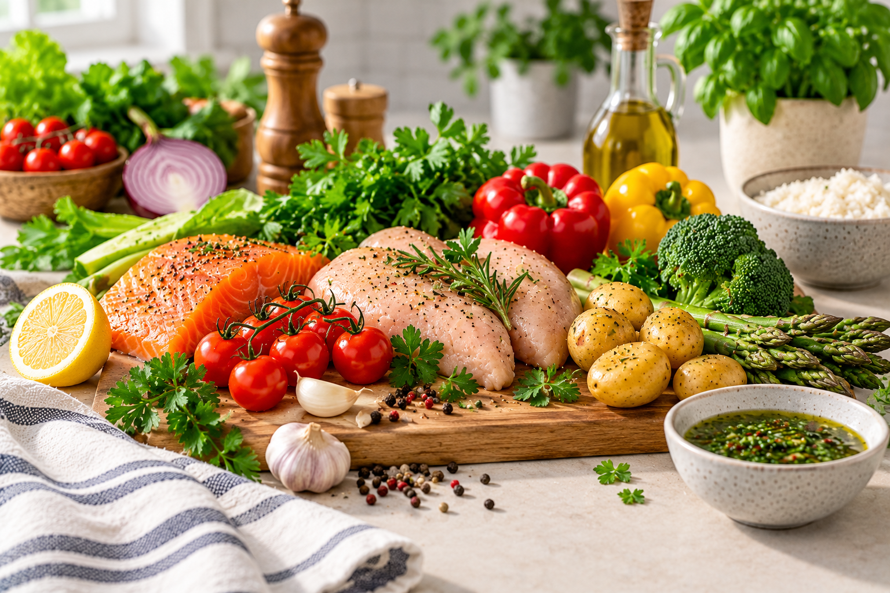
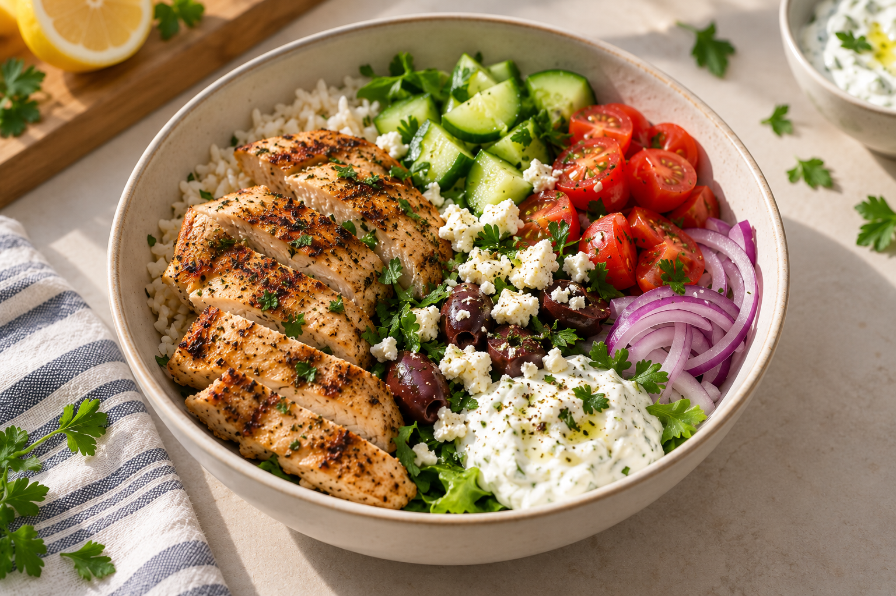
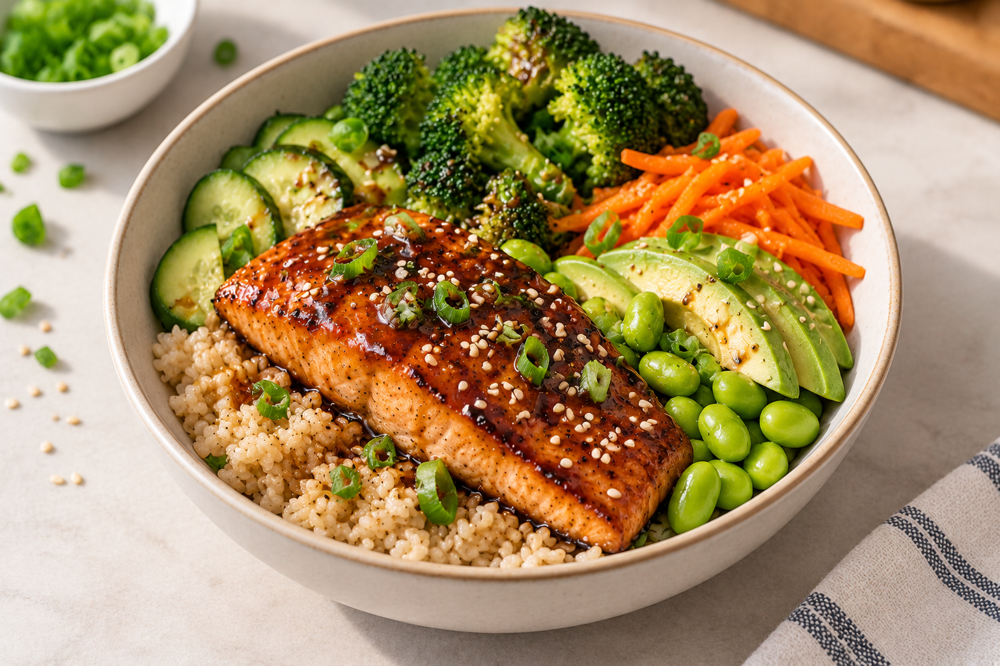
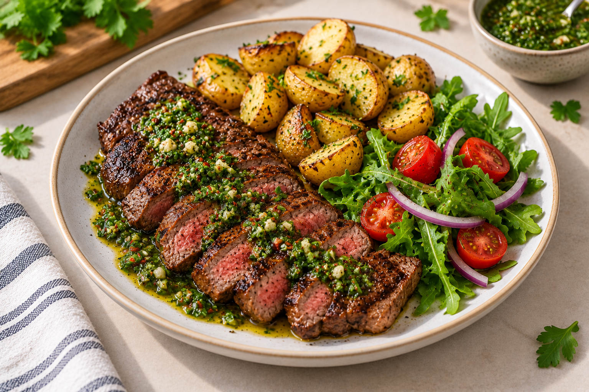
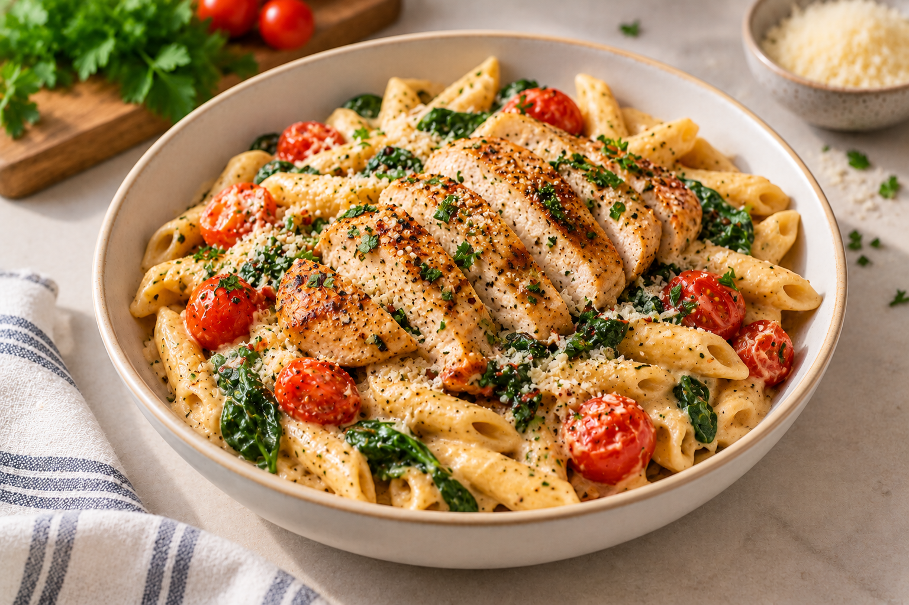
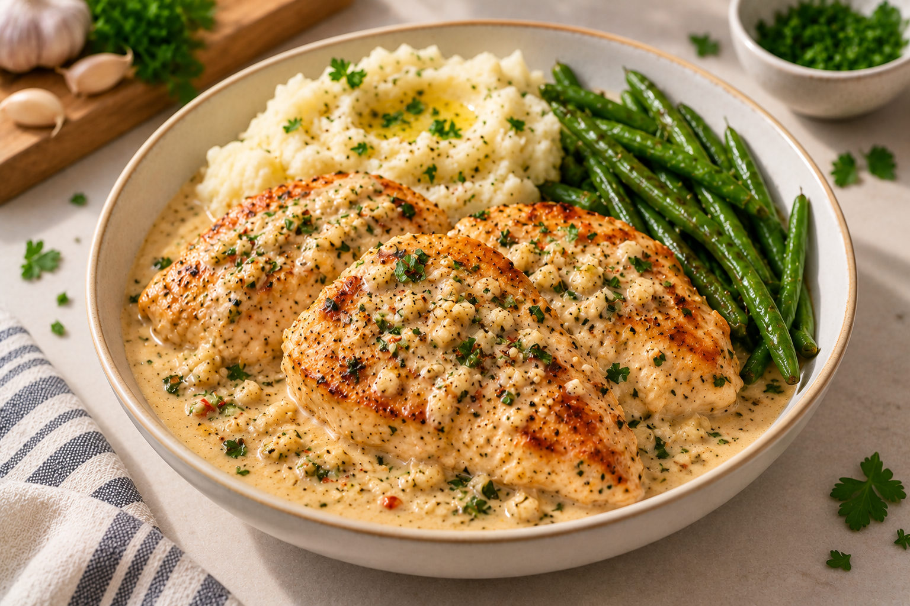
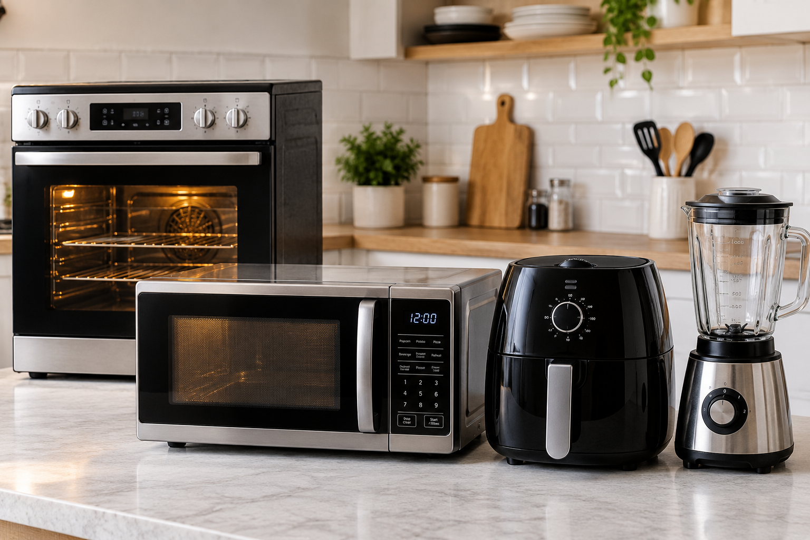

Good Food Starts Here
Simple tips. Essential skills. Delicious recipes. Everything you need to start cooking with confidence.
Start Your Cooking Journey →Simple tips. Essential skills. Delicious recipes. Everything you need to start cooking with confidence.
Start Your Cooking Journey →
Discover simple, delicious meals you can make at home.





Discover the essential tools and appliances that make everyday cooking easier, safer and more enjoyable.
